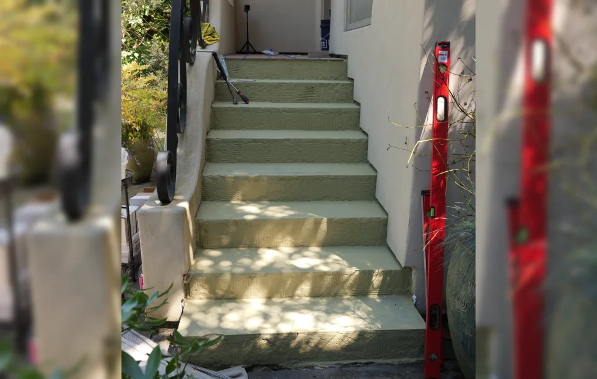

Reconstructed from project records · Approximate dimensions
Drag to turn · Scroll or pinch to zoom · Arrow keys to rotate
About this view
Follow the tiled flight from the lower approach to the recessed entry, between the curved garden wall and the house-side window.
The public views establish the rising flight, patterned risers, left railing, window and glazed entry. Step dimensions, rail detailing, landing depths, facade extent and material colors are approximations.
From the front walk in Madison Park, you see the patterned faces of these steps first. As you climb them, the pattern gives way to plain terracotta underfoot. The homeowner picked both tiles. Our job was to make that combination work on a worn exterior stair before her guests arrived.
The four-lobed motif in the model comes from the tile sample photographed on this job. Compare its central flower and corner fans with the installed risers below the slim metal nosing.
The homeowner selected the tread and riser tiles. Vladimir and Serhii worked through their alignment with her, and DuetRight proposed the metal nosing.
Starting at the front gate
The existing painted concrete was chipped. The owner showed us inspiration for an entry that felt at home with the European character of her house. During the visit we took reference photographs and measured the steps. The tread, the vertical riser and the exposed front edge each needed a different finish, and the pattern had to make sense across the full width of the flight.
Her guests were due eight days after work started. The patterned porcelain she wanted for the risers was out of stock at the nearby suppliers. Vladimir located enough of it in Tacoma and collected it. That kept the owner's original choice in the project.
Before: worn exterior concrete steps with chipped edges and faded paint, with a level set on the treads.
Lining up two different eight-inch tiles
Both cartons called their tiles eight inches square. Held together, the terracotta and the patterned porcelain were slightly different sizes. Over a run of steps that difference shows up where a tread joint meets the pattern below it. Vladimir and Serhii showed the homeowner the mismatch. She preferred the pattern she had chosen and accepted how the joints would meet.
The exposed edges posed a separate question. She had considered a painted metal trim. We proposed an aluminum stair nosing suited to foot traffic and wet weather. Its narrow line finishes each tread without covering much of the patterned tile below.
Single patterned porcelain tile leaning against a green-painted stair riser before installation, with partially laid tiles and leveling spacers visible above.
What the pattern sits on
The crew removed the old material back to concrete, corrected uneven areas and applied a liquid waterproofing layer. Fabric reinforced the seams and corners. Serhii set the risers first and then the treads, using eighth-inch spacers and cutting the tile and metal profiles to fit each edge.
Dark gray epoxy grout frames the individual tiles. The perimeter and movement joints received flexible sealant, and the terracotta received a penetrating sealer. In the close-up you can see the porous surface of the tread beside the sharper print on the riser. The finish preserves that difference.
In-progress view of terracotta tiles being laid on a green-painted surface using blue leveling spacers. A small stack of matching tiles sits nearby next to a bucket.
The day the guests were due
The stairs were complete two days before the guests arrived. The wider photograph shows the result the owner had been judging from the gate. A repeated band of pattern runs up the flight, with warm terracotta landings between the bands and a clearly defined edge at each step.
Close-up view of the staircase corner highlighting the intricate patterned riser tiles and the textured terracotta treads.
Before & after
See what changed.
Move the divider to compare the two photographs.

BeforeAfter↔
Spanish tile staircase in 8 daysOriginals BeforeAfter
Blender detail study
Terracotta tread and patterned riser.
Reconstruction from project records · November 2026
A closer look in motion
Five-second Blender camera study · Terracotta tread and patterned riser